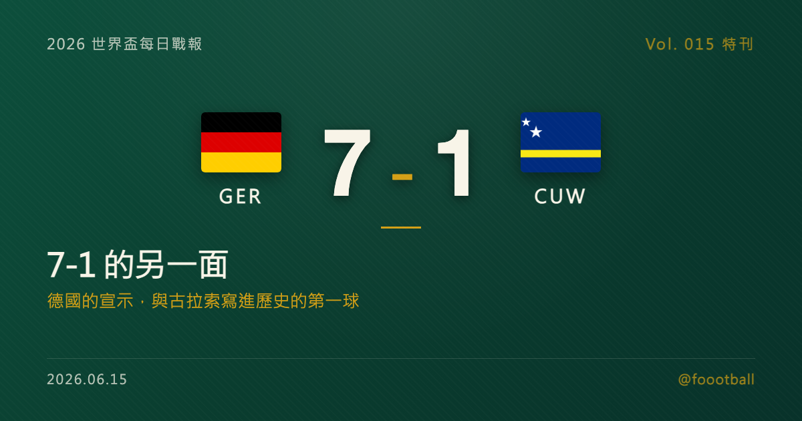

7-1 的另一面：德國的宣示，與古拉索寫進歷史的第一球
德國 7-1 古拉索是本日最大比分：Nmecha、Schlotterbeck、哈費茨（梅開二度）、Musiala、Brown、Undav 六人進球。但這場大勝的另一面，是世界盃史上人口最少（約 15.6 萬）、首度參賽的古拉索，在第 21 分鐘由 Comenencia 攻入隊史世界盃第一顆進球。一邊是奪冠級的宣示，一邊是小國寫進歷史的時刻。

2026 世界盃特刊｜Vol. 015 番外
有些比分，看一眼就懂；但 7-1 這個數字，需要從兩端各看一次，才算讀完。
德國 7-1 古拉索，是 2026 世界盃 E 組首輪、也是本日最大的比分。從一端看，這是一支傳統豪門在世界盃舞台上交出的標準答卷——6 名球員合力進 7 球、節奏全程在握，把「我們是來爭冠的」這句話寫得清清楚楚。但從另一端看，站在這 7 球對面的，是世界盃史上人口最少的參賽國；對古拉索而言，這一夜的重點從來不是輸了幾球，而是他們終於站上了這座舞台，並在上面留下了隊史的第一顆進球。這篇特刊，想把這兩端都講清楚。
一、德國的宣示：6 人進 7 球，一支年輕豪門的開幕答卷
先說德國這一端。
這場大勝來得又快又全面。第 6 分鐘，Felix Nmecha（恩梅查）就為德國打破僵局，奠定了全場的基調；第 38 分鐘，中後衛 Nico Schlotterbeck（施洛特貝克）插上建功；上半場補時，Kai Havertz（哈費茨）穩穩命中一記點球，把比分擴大。易邊再戰，德國沒有絲毫放鬆——第 47 分鐘 Jamal Musiala（穆夏拉）破門、第 68 分鐘 Nathaniel Brown（布朗）再下一城、第 78 分鐘替補登場的 Deniz Undav（溫達夫）也插上一腳，最後由哈費茨在第 88 分鐘完成梅開二度，將比分定格在 7-1。
值得一提的，是這份進球名單的「分散」。七顆進球由六名球員完成、哈費茨梅開二度，其餘進球分別來自後衛、中場與鋒線——這種火力分布，往往比單一射手連續破門更能說明一支球隊的整體狀態：進攻不只依賴某一個點，而是能從不同線路、不同位置持續製造輸出。對主帥而言，這是開幕戰最理想的劇本之一：贏得乾脆、火力分散、主力得以在比分穩定後輪轉休息，為接下來更硬的比賽保留體能。
更值得注意的是這支德國的「年輕」。Musiala、Nmecha、Schlotterbeck、Brown 等人，至少說明這支德國已不再只靠上一個黃金世代的記憶前進；哈費茨則以梅開二度，扮演了承上啟下的角色。經歷過前幾屆世界盃的起伏之後，這支德國正試著用一場 7-1 告訴外界：他們已經重新整裝。當然，小組賽首戰的對手實力與後段的硬仗不可同日而語，一場大勝不能直接換算成奪冠籌碼——德國自己應該比誰都清楚這一點。但作為開幕宣示，這份答卷已經足夠漂亮。E 組首輪過後，德國以 7 球的巨大淨勝球，與同樣首戰告捷的象牙海岸並列、暫居小組龍頭。
從戰術層面看，這場 7-1 也藏著幾個對德國有意義的訊號。一是面對低位密集防守時的破解能力——當實力較弱的對手把防線壓低、退守禁區，強隊能否從不同位置、用不同方式破門，往往是檢驗耐心與創造力的試金石；德國這場由後衛插上、中場前插、鋒線把握機會的多種進球方式，恰恰說明這套進攻體系是有層次的，不會在「打不開」的時候卡死。二是節奏的拿捏——在大比分領先後沒有鬆懈，卻也懂得在適當時機讓主力下場、換上輪替球員，這種「該收就收」的成熟度，正是長賽程作戰最需要的。當然，真正的考驗從來不在這種一面倒的比賽裡：48 隊的賽制讓賽程更長、淘汰賽的對手更硬，德國能走多遠，終究得看他們在勢均力敵的硬仗裡踢成什麼樣。但作為起點，先用一場大勝穩住軍心、把淨勝球的本錢存起來，已是再理想不過的開局。
二、比分另一端：15.6 萬人的島嶼，第一次踏上世界盃
現在，把鏡頭轉到比分的另一端。
古拉索（Curaçao），一個位於加勒比海南部、緊鄰委內瑞拉外海的島嶼，是荷蘭王國的構成國之一。它的人口只有大約 15.6 萬——這個數字，大約等於台北市一個行政區的人口。就是這樣一個小到不能再小的國度，在 2026 年寫下了世界盃歷史：他們成為世界盃史上人口最少的參賽國，一舉打破了由冰島（2018 年參賽時人口約 35 萬）保持的紀錄——古拉索的人口，還不到當年冰島的一半。
而這支球隊踏上世界盃的方式，同樣值得記住。在中北美及加勒比海區（Concacaf）的會外賽中，古拉索以全程不敗的姿態殺出重圍——他們是整個會外賽中少數從頭到尾沒有輸過的球隊之一，最終在最後一個比賽日於牙買加金斯敦逼平對手、力壓小組登頂，直接搶下了那張歷史性的門票。對一個足球資源、人口基數都極為有限的小國來說，「不敗晉級」這四個字背後的份量，遠超過紙面上的積分。
帶領這支球隊的，是荷蘭老帥 Dick Advocaat（迪克·艾德沃卡特）。這位執教資歷橫跨數十年、帶過荷蘭國家隊與歐洲多支勁旅的老教練，江湖人稱「小將軍」，如今以 78 歲之齡重新站上世界盃舞台，成為世界盃史上最年長的主帥。一個征戰足壇大半輩子的老帥，最後選擇帶著一支史上最小的參賽國走進世界盃，本身就是一段足夠浪漫的註腳。
而一個只有 15.6 萬人的島嶼，究竟要如何湊出一支能踢世界盃的球隊？答案，藏在它與荷蘭之間的歷史裡。作為荷蘭王國的構成國，古拉索與荷蘭之間有著綿密的人口流動——許多具古拉索血統的球員在荷蘭出生、在荷蘭與歐洲的青訓體系裡長大成才，再選擇披上古拉索的球衣，為父輩的母島而戰。這支球隊因此更像是一整個離散族群跨越大西洋的集結：他們的足球養分大多來自歐洲，認同卻指向那座加勒比海上的小島。本場為古拉索打進歷史首球的 Livano Comenencia（科梅嫩西亞），正是這條「歐洲養成、回到根源」路線的縮影——在歐洲的青訓裡淬鍊成才，最後把自己的名字，連同古拉索的隊史首球，一起留在了世界盃的紀錄上。
面對德國這樣的對手，實力的鴻溝是客觀存在的，七球落敗並不令人意外。但古拉索來到世界盃的意義，本來就不該用一場比賽的比分來丈量。
三、那顆進球：在 7 球落後的夜裡，寫下隊史的「第一次」
如果這場比賽只剩一個畫面值得被記住，那一定是第 21 分鐘。
當時比分還沒有完全失控，古拉索抓住一次機會，由 Comenencia 完成致命一擊——皮球入網的那一刻，古拉索攻入了他們隊史在世界盃的第一顆進球。對一支首度參賽的球隊而言，這顆球的象徵意義，遠遠超過它在計分板上的位置：它意味著這個 15.6 萬人的島嶼，不只是「來過」世界盃，而是在世界盃的紀錄裡，永遠留下了屬於自己的一筆。
值得想像的，是這顆球落網的那一刻，加勒比海另一端的古拉索是什麼光景。對一個人口比許多城市的單一行政區還少的島嶼來說，能有自己的球員出現在世界盃的轉播畫面裡，已經是難以想像的事；而當那名球員真的把球踢進四屆世界盃冠軍的球門，那種屬於一整座島的集體記憶，恐怕會被反覆訴說很多年。足球最迷人的地方，從來不只是強隊如何輾壓，更在於它願意給小人物一個被全世界看見的舞台——哪怕只是短短一瞬。Comenencia 的這一顆，正是這樣的一瞬。
這也是為什麼，即便最終 1-7 落敗，古拉索這一夜依然值得被認真書寫。賽後，老帥 Advocaat 的態度也很能說明問題——對一支站上從未抵達過的舞台、又在強敵面前踢進歷史首球的球隊來說，「仍然可以為自己感到驕傲」並不是失敗者的場面話，而是一個小國對自己歷史時刻最誠實的註腳。
當然，得提一句這個 7-1 的巧合。對德國球迷來說，「7-1」是一個有特殊記憶的比分——2014 年世界盃準決賽，德國正是以 7-1 大勝地主巴西：那一夜他們在上半場就 5-0 領先，Thomas Müller（穆勒）首開紀錄，Miroslav Klose（克洛澤）更攻入個人世界盃生涯第 16 球、刷新世界盃歷史總進球紀錄，最終寫下世界盃準決賽史上最懸殊的比分，並一路捧起當年的冠軍。十二年後，德國又一次踢出 7-1，只是這一次的對手與場合完全不同：那是淘汰賽對傳統強權的經典之夜，這是小組賽首戰對首航小國的火力展示，兩者並不能等量齊觀，硬要相提並論並不公平。但對德國而言，能在世界盃再次寫下這個熟悉的數字，多少還是個討喜的彩頭。
四、兩端之後：各自的下一步
7-1 之後，兩支球隊各自走向不同的路。
對德國來說，這是理想的開局，但也僅僅是開局。本屆世界盃擴軍到 48 隊、賽程更長，真正的考驗在後頭——E 組裡象牙海岸同樣首戰全取三分，接下來幾輪的捉對廝殺才會逐漸決定誰能掌握主動。一場 7-1 給了德國信心與淨勝球的優勢，但豪門的成色，從來都是在硬仗裡才看得出來。對德國這樣背負奪冠期待的球隊而言，開幕戰大勝最大的價值，或許不在比分本身，而在於它讓教練團能更從容地安排輪換、保護主力，把狀態的高點留到真正關鍵的淘汰賽。
對古拉索來說，小組賽還有兩輪。在本屆「每組前兩名加 8 個最佳第三名、共 32 隊晉級」的新賽制下，理論上連小國都還留著一線想像的空間；但更實際地說，對這支隊史首度參賽的球隊而言，能踢進世界盃、能在世界盃踢進球，本身就已經是他們此行最大的收穫。接下來無論結果如何，古拉索都已經把自己的名字，寫進了世界盃的歷史。
7-1 是一個看起來毫無懸念的比分。但把它從兩端各讀一次，你會發現它其實裝著兩個故事：一個關於豪門如何重新整裝、宣示企圖，另一個關於一個 15.6 萬人的小島，如何在世界足球最大的舞台上，完成了屬於自己的第一次。足球之所以動人，往往正是因為這樣——同一個比分，對不同的人，意味著完全不同的東西。
資料來源：FIFA 賽程與場館資訊、FIFA 球隊檔案、Sky Sports、NBC News、FOX Sports、ESPN 等賽後與背景報導交叉核對（2026 世界盃 6/14 德國 7-1 古拉索進球分鐘與球員；古拉索人口、面積、晉級背景與教練資料；德國 2014 世界盃準決賽 7-1 巴西為歷史對照）。時間以台北時間換算、實際以官方公告為準。
常見問題
德國 7-1 古拉索，進球都是誰打進的？
七顆進球由六名球員打進：Felix Nmecha（6'）、Nico Schlotterbeck（38'）、Kai Havertz（45'+ 點球、88'，梅開二度）、Jamal Musiala（47'）、Nathaniel Brown（68'）、Deniz Undav（78'）。古拉索則由 Livano Comenencia 在第 21 分鐘攻入一球。
古拉索為什麼是「史上最小參賽國」？
古拉索是位於加勒比海、隸屬荷蘭王國的島嶼，人口僅約 15.6 萬，是世界盃史上人口最少的參賽國，打破了冰島（2018 年參賽時約 35 萬）的紀錄。2026 是他們隊史第一次踏上世界盃，會外賽中以不敗之姿從中北美區（Concacaf）晉級。
這個 7-1 和 2014 年德國 7-1 巴西有關係嗎？
只是比分上的巧合。2014 年那場是世界盃準決賽、德國大勝地主巴西，是淘汰賽對傳統強權的經典之夜；2026 這場是小組賽首戰、對首度參賽的小國古拉索，兩者場合與對手都不同，不宜直接相提並論。
Tags：世界盃, 2026世界盃, 德國, 古拉索, 哈費茨, Advocaat